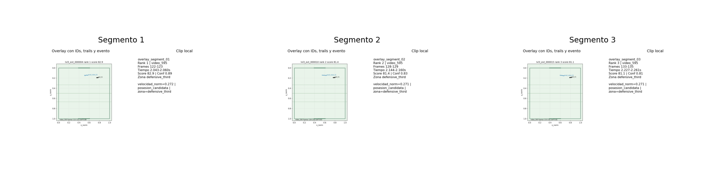

FutBotMX Nivel 3
Reporte Final FutBotMX
Entrega local reproducible | regla activity20_final_report_v0.1- Checks pass
- 11
- Clips Nivel 3
- 2/2
- Links OK
- 19/19
- Highlights142comparados multi-clip
- Score top82.9ranking Nivel 3
- Clips validados4actividad 18
- Fallo conocido1caso diagnostico
- Overlay3 seg.7.5s sugeridos
- Links faltantes0validacion HTML
Resumen
Este reporte consolida la entrega local de FutBotMX despues del cierre Nivel 3: pipeline reproducible, dashboard, reel, revision humana ligera, validacion multi-clip, overlay corto y evidencia enlazada.
El alcance se mantiene conservador: analisis aproximado de futbol robotico, sin arbitraje oficial, sin SaaS, sin streaming en tiempo real y sin versionar archivos pesados.
Metricas principales
Fuentes CSV versionadas.
Comparacion multi-clip
| Clip | Rol | Pipeline | Highlights | Score top | Interacciones | Homografia |
|---|---|---|---|---|---|---|
| video_595 | primary | generated | 82 | 82.9 | 57.0 | usable (0.82) |
| video_667 | secondary | generated | 60 | 74.0 | 428.0 | usable (0.74) |
Validacion actividad 18
| Clip | Resultado | Alcance | Homografia | Balon | Highlights | Limitaciones |
|---|---|---|---|---|---|---|
| video_595 | exito | level3_reused | usable (0.82) | exito | degradacion | revision_visual_provisional|equipos_neutrales |
| video_667 | degradacion | level3_reused | usable (0.74) | exito | degradacion | homografia_provisional|revision_visual_provisional|equipos_neutrales |
| video_836 | degradacion | level2_baseline | not_evaluated (0.00) | degradacion | not_evaluated | no_level3_outputs |
| video_480 | fallo_conocido | diagnostic_only | not_evaluated (0.00) | fallo | not_evaluated | no_level3_outputs |
Evidencia visual final
Overlay corto local documentado en actividad 19.

| Segmento | Clip | Frames | Score | Conf. | Etiqueta |
|---|---|---|---|---|---|
| overlay_segment_01 | video_595 | 122-123 | 82.9 | 0.89 | velocidad_norm=0.272 | posesion_candidata | zona=defensive_third |
| overlay_segment_02 | video_595 | 128-129 | 81.4 | 0.83 | velocidad_norm=0.271 | posesion_candidata | zona=defensive_third |
| overlay_segment_03 | video_595 | 133-135 | 81.1 | 0.81 | velocidad_norm=0.271 | posesion_candidata | zona=defensive_third |
Evidencias enlazadas
Todos los links son relativos al HTML final.
| Evidencia | Ruta | Existe | Uso |
|---|---|---|---|
| README principal | ../../README.md | true | Entrada del proyecto y regla principal. |
| Reporte ejecutivo Nivel 3 | ../final_demo_report/FINAL_DEMO_REPORT.html | true | Reporte HTML previo para evaluadores. |
| Dashboard revisado | ../test_035_human_review/dashboard/dashboard.html | true | Dashboard local con revision humana. |
| Reel demo revisado | ../test_035_human_review/reel/reel_demo.html | true | Reel HTML con segmentos destacados. |
| Panel de revision humana | ../test_035_human_review/human_review_panel.html | true | Panel local para editar estados de highlights. |
| Cierre Nivel 3 | ../test_027_level3_closure/LEVEL3_CLOSURE_SUMMARY.md | true | Resumen de cierre tecnico. |
| Checks de cierre | ../test_027_level3_closure/closure_checks.csv | true | Gate tecnico Nivel 3. |
| Resumen analisis completo | ../test_034_full_analysis/summary.md | true | Resumen del orquestador completo local. |
| Manifest analisis completo | ../test_034_full_analysis/full_analysis_manifest.csv | true | Manifest del pipeline completo. |
| Comparacion multi-clip | ../test_026_level3_multiclip/level3_multiclip_comparison.csv | true | Metricas comparadas de clips Nivel 3. |
| Resumen actividad 18 | ../test_036_activity18_clip_validation/summary.md | true | Validacion ligera de clips. |
| Comparacion actividad 18 | ../test_036_activity18_clip_validation/clip_validation_comparison.csv | true | Estados exito/degradacion/fallo. |
| Fallos actividad 18 | ../test_036_activity18_clip_validation/failure_modes.csv | true | Modos de fallo documentados. |
| Resumen actividad 19 | ../test_037_activity19_video_overlay/summary.md | true | Overlay corto local. |
| Segmentos overlay | ../test_037_activity19_video_overlay/video_overlay_segments.csv | true | Timeline reproducible para MP4 local. |
| Contact sheet overlay | ../test_037_activity19_video_overlay/video_overlay_contact_sheet.png | true | Evidencia visual ligera del overlay. |
| Plan render overlay | ../test_037_activity19_video_overlay/render_overlay_clip_plan.md | true | Render MP4 local fuera de Git. |
| Plan PDF local | pdf_export_plan.md | true | Instrucciones para PDF local no versionado. |
| Script PDF local | render_final_report_pdf.sh | true | Ayuda local para imprimir PDF fuera de Git. |
{kind=link}
PDF local
El PDF es opcional y se genera fuera del repositorio en local_outputs/activity20/futbotmx_final_report.pdf. El paquete versionado conserva HTML, CSV, Markdown, configuracion y scripts ligeros.
No se copian videos, checkpoints, frames masivos, mascaras ni renders pesados. El reporte enlaza la evidencia existente para mantener la entrega reproducible y liviana.